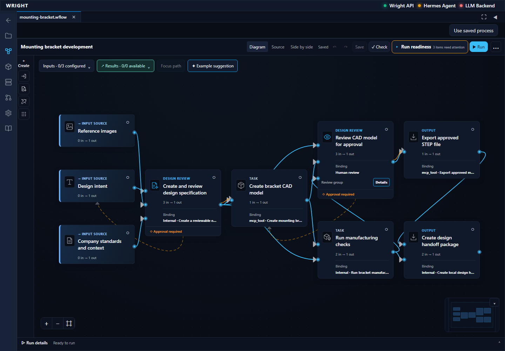
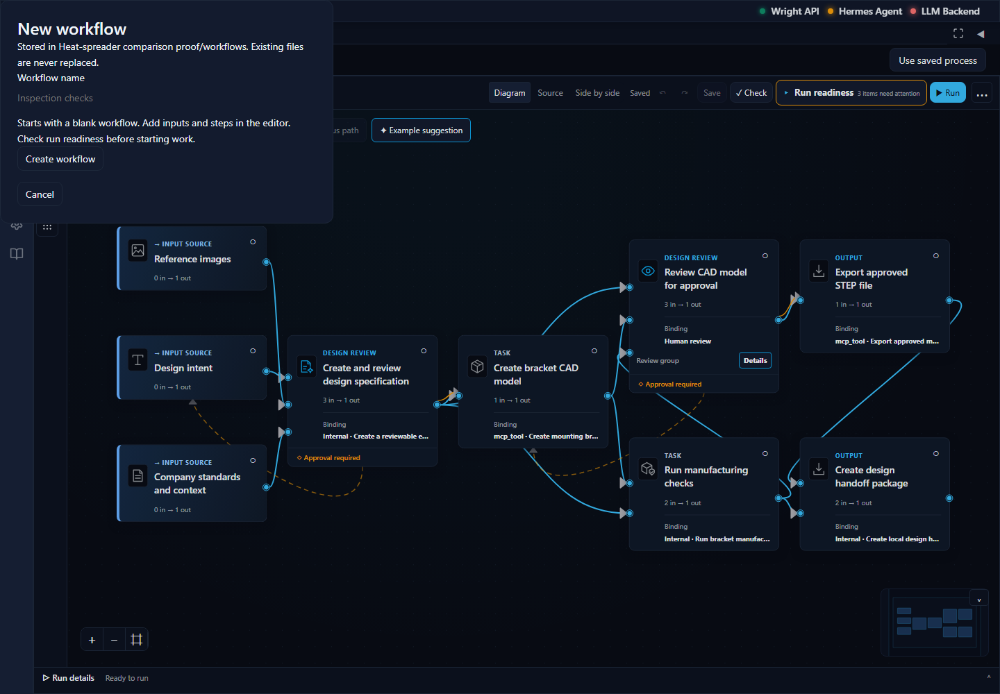
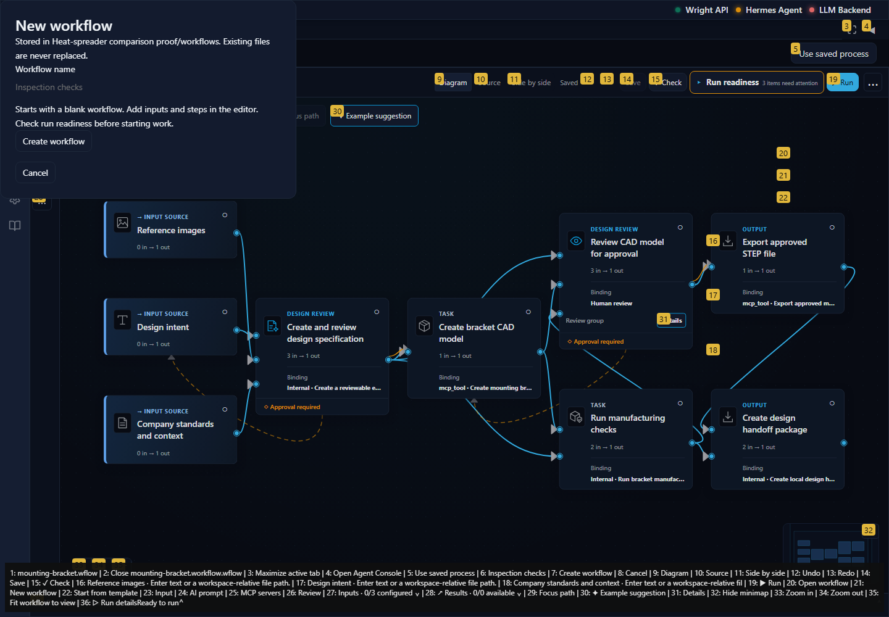
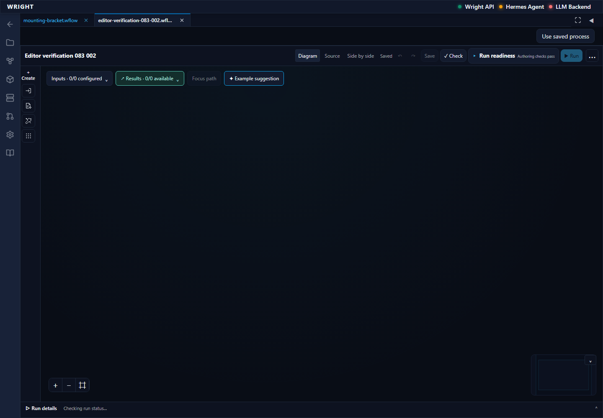
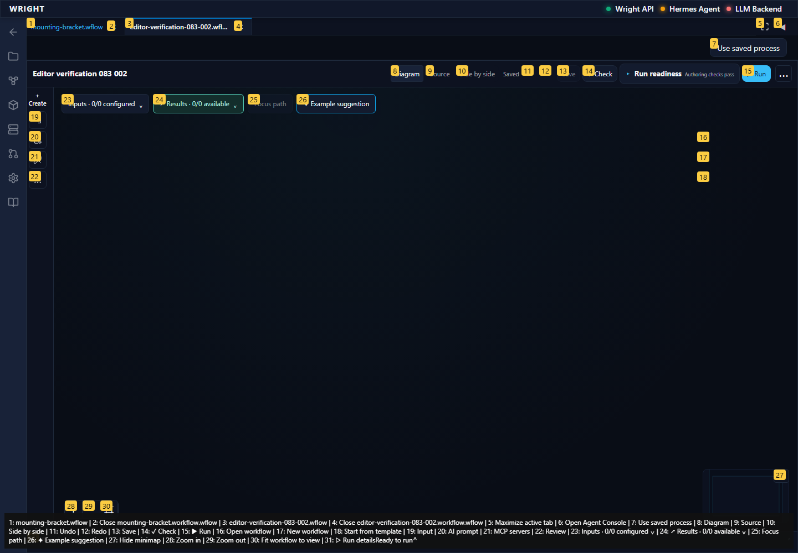

Normal workspace editor entry · pass
Existing editor and workflow file menu are visible.
Expected: Existing editor opens within the workspace.
Actual: Existing editor and workflow file menu are visible.
raw 

annotated
A fresh empty verification workflow, preserved editor authoring and no execution; stop at the first confusing or failing state.
Status: blocked
Existing editor and workflow file menu are visible.
Expected: Existing editor opens within the workspace.
Actual: Existing editor and workflow file menu are visible.
raw 
annotated
The installed dialog describes blank-workflow creation and readiness.
Expected: Instructions describe a blank workflow.
Actual: The installed dialog describes blank-workflow creation and readiness.
raw 
annotated 
First unexpected state retained; no execution or review action submitted.
Expected: Normal editor action succeeds without guesses or workarounds.
Actual: expect(locator).toBeVisible() failed Locator: getByTestId('workflow-recovery-concept') Expected: visible Error: strict mode violation: getByTestId('workflow-recovery-concept') resolved to 2 elements: 1) <section data-revision="1" data-testid="workflow-recovery-concept" class="workflow-recovery workflow-recovery--redesign" data-layout-digest="sha256:4e53cb726a749dae59d760f8dc22951cfee979be0b86bf5ab0276b21742a9396" data-semantic-digest="sha256:15e4feb074479d5f8c91ba77d0405d36bc520457065a663332dbd8ceffa75190">…</section> aka getByLabel('Heat-spreader comparison proof workflow workflows/mounting-bracket.workflow.').getByTestId('workflow-recovery-concept') 2) <section aria-busy="true" data-surface-state="loading" data-testid="workflow-recovery-concept" class="workflow-recovery recovery-boundary-state">…</section> aka getByText('Loading workflow editor…The') Call log: - Expect "to.be.visible" with timeout 5000ms - waiting for getByTestId('workflow-recovery-concept')
raw 
annotated 